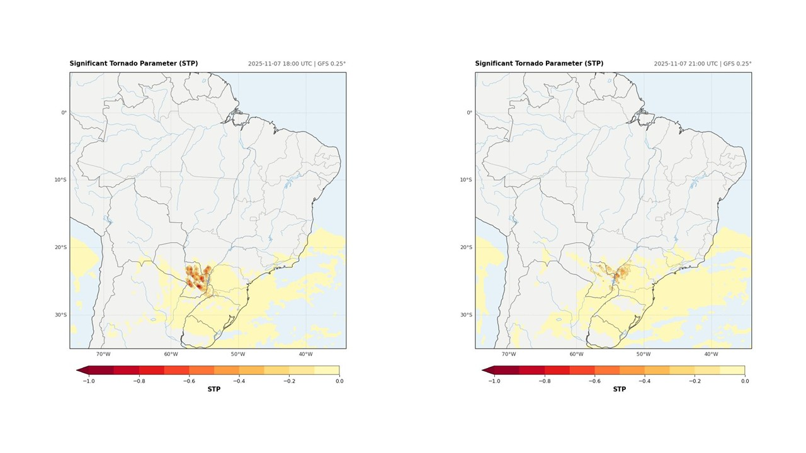

Um índice indicador de tornado

O "Significant Tornado Parameter" (STP) é um índice utilizado para identificar ambientes favoráveis à ocorrência de tornados significativos, desde que haja o desenvolvimento de supercélulas.
Para isso, o STP combina diferentes parâmetros atmosféricos, como a CAPE de superfície, o nível de condensação por levantamento de superfície, a helicidade relativa à tempestade entre a superfície e 1 km e o cisalhamento vertical do vento entre a superfície e 6 km.
Os valores do STP são maiores ou iguais a zero no Hemisfério Norte e menores ou iguais a zero no Hemisfério Sul, em função do sinal da helicidade relativa à tempestade.
Nas imagens, é possível observar o comportamento do índice no dia 07/11/2025, às 18 UTC e 21 UTC, em diferentes áreas do território brasileiro. Essa foi a mesma data em que foi registrado um tornado no município de Rio Bonito (PR). O STP se mostrou uma ferramenta interessante para indicar ambientes favoráveis à formação de tornados, porém, vale ressaltar suas limitações espaciais.
Para quem deseja compreender melhor esse índice, uma boa referência é o trabalho disponível em: Veloso-Aguila, Rasmussen e Maloney (2024).
Dados: modelo GFS, inicializado em 07/11/2025 às 12 UTC, com dados recuperados via herbie.
Plotagem da imagem: código desenvolvido em Python a seguir.